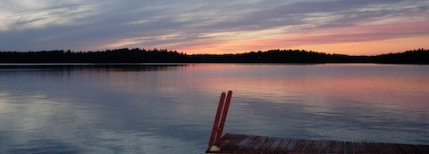

KATHERINE & CHARLIE’S MINNESOTA WEDDING RECEPTION
SATURDAY JULY 27, 2013 at 6:30 PM
BAYVIEW EVENT CENTER
LAKE MINNETONKA

If you are coming from out of town, Kate's parents Ric & Vicki have some activities planned before and after the Wedding Reception. Please consider staying few days in Minneapolis; summer in Minnesota, the Land of Ten Thousand Lakes, is wonderful.
Friday evening Katherine’s aunts and uncles Carol, Bill, Ardy & Mark are hosting a barbeque for all travelers at Carol & Bill’s home on Lake Minnetonka. Carol & Bill are known for their lakeside hospitality. Lake Minnetonka is a huge lake a short drive outside of Minneapolis with over 100 miles of lakeshore. Bring a swimsuit if you think you might want to swim.
Saturday morning and early afternoon all are invited to stop by Mona & Michael’s (Katherine’s brother and sister-in-law) home for lounging and lunch. We will rent kayaks and canoes to paddle the Chain of Lakes just steps from Michael & Mona’s home in south Minneapolis.
Anyone wanting a bit more culture is invited to arrange to get tickets to see Pride & Prejudice by Jane Austen at the Guthrie Theater in downtown Minneapolis. The play is at 1PM both Sat & Sun with an evening performance on Sunday at 7PM.
Saturday evening is of course the big event: Charlie & Katherine Wedding Reception at the BayView Event Center on beautiful Lake Minnetonka.
Sunday morning all travelers are invited to a brunch at the home of Katherine’s parents overlooking the Mississippi River and downtown Minneapolis.
Accommodation:
Events over the weekend are spread throughout Minneapolis, Wayzata and Excelsior. We suggest staying near downtown Minneapolis to make getting to and from the airport easy.
We've blocked off rooms at the A Loft in Minneapolis at $149/night. This is directly opposite brunch on Sunday 28th. The hotel is located a few blocks from the light rail, making transportation to and from the airport quick and inexpensive. For reservations, call 1-877/GO ALOFT and mention "The Rosow Wedding" before Tuesday, June 25th.